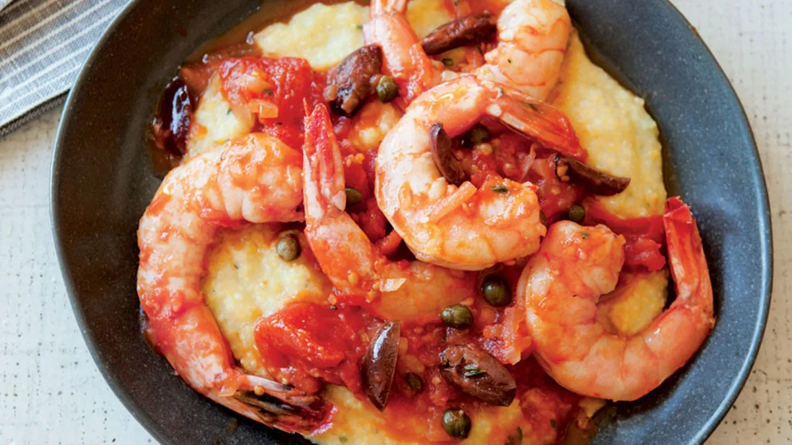

Shrimp in Dank Tomato-Olive-Caper Sauce with Polenta
This recipe is pretty good looking so we are going to try to make it

INGREDIENTS
- 2 tsp Olive oil
- 1/2 Yellow onion finely chopped
- Red pepper flakes
- 2/3 cup (5 oz) Dry white wine
- 1 can (14.25 oz) Tomatoes
- 1lb Preferat jumbo shrimp
- Kosher salt & black pepper
- 1/4 cup Kalamata olives, pitted & quartered
- 1 tbsp Capers
- 2 tsp Thyme, minced
HOW TO MAKE IT DANK
fuck there is a lot to do here